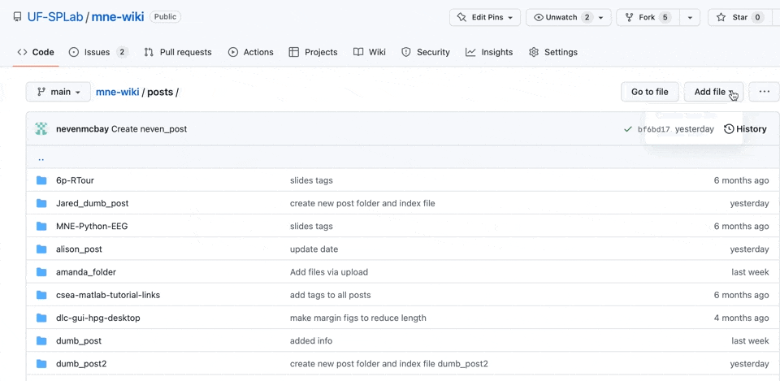

UF-Open-Science-Wiki
About
UF-Open-Science-Wiki
Categories
All
(21)
AI
(4)
EEG
(3)
MNE
(2)
Matlab
(1)
Python
(6)
R
(1)
analysis
(1)
code
(9)
data wrangling
(1)
development
(1)
organization
(1)
pipeline
(2)
slides
(4)
tutorial
(7)
version control
(1)
workflow
(2)
Order By
Default
Title
Date - Oldest
Date - Newest
Author
Convolution and deconvolution: an Illustration
I’ve somehow managed to bypass the PySide6 error so while I have no idea how to solve it, I’ll attach a link to the article that helped me go around it
SSH to HPG3 and run MNE-BIDS-Pipeline
Type the following command in the terminal:
RPM
Aug 9, 2023
Problem Solving Code in 20 Questions
AI helped me to solve an audio segmentation problem that has dogged me for the past year.
RPM
Apr 30, 2023
Student-Directed Research
Q: How does student-directed research work?
bot
Mar 29, 2023
Post template
A…
RPM
Mar 29, 2023
Open Science: Best Practices for Repos
Q: How does someone use a repo to accelerate onboarding, improve accessibility and integration, and overall reduce technical burden?
bot
Mar 29, 2023

Posting Wiki Content
Python
code
AI
tutorial
Markdown is a markup…
Isabella Fleites
Mar 7, 2023
My Wiki Document
My trial wiki doc
Alison Ryan
Mar 7, 2023
MNE Abstract
Subanesthetic ketamine is a rapid and effective treatment for depression in individuals who have not responded to other treatments. Several lines of evidence demonstrate…
Isabella Fleites
Mar 7, 2023
How to make a wiki document.
RPM
Mar 1, 2023
hey check this out
its cool i swear
Isabella Fleites
Feb 23, 2023
Sharing Customized Python Environments
Python
code
AI
tutorial
To simply use the environment go to
RPM
Dec 30, 2022
DeepLabCut GUI on HiPerGator Desktop
Python
code
AI
tutorial
Steps to start DeepLabCut in graphical user interface mode
:
1. Log on to HiPerGator (HPG)
2. Use HPG OpenOnDemand to start the
Interactive App
: *HiPerGator…
R. Mears
Nov 19, 2022
Setup HiPerGator for DeepLabCut
Python
code
AI
tutorial
Tips to setup your account so that you can use DeepLabCut
R Mears
Oct 24, 2022
R-tour in 6 pages
R
code
data wrangling
slides
tutorial
Introduction to Using R and Tidyverse
R Mears
Jul 18, 2022
Introduction to GitHub for Open Science
code
development
organization
version control
slides
tutorial
Introduction to Version control for doing open science
R Mears
Jul 11, 2022
MNE-Python: EEG
Python
code
pipeline
workflow
MNE
EEG
slides
tutorial
Introduction to Analysis Pipelines for EEG
R Mears
Jun 22, 2022
Why Code?
Python
code
pipeline
workflow
MNE
EEG
slides
Rationale for scripting with MNE-Python
Ryan Mears
Jun 8, 2022
CSEA MatLab tutorials
code
analysis
Matlab
EEG
This is a post with executable code.
AK
Jun 8, 2022
Post template
This is a test post.
RPM
Jun 1, 2022
No matching items